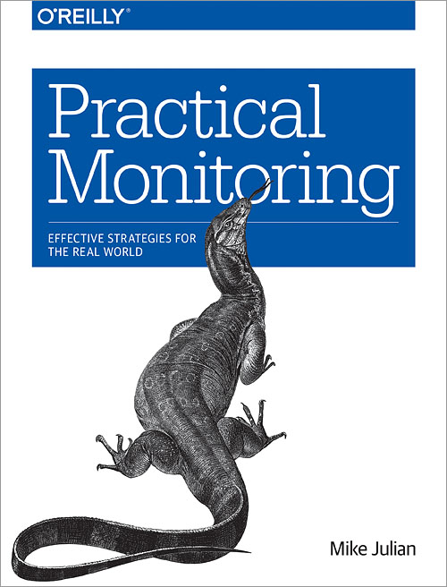

Principios básicos para monitorización
Publicado el 12 de June de 2022 en Monitoring • 6 min de lectura
Actualmente ando investigando y mejorando mis conocimientos sobre monitorización. Más allá de una forma de medir el estado de tu sistema, la monitorización permite obtener datos de uso, fallos, estadísticas y otras métricas relacionadas con cómo utilizan los usuarios todo tu trabajo. Todo esto puede ayudarte a la hora de tomar decisiones, ya que con toda esta información puedes saber qué acciones pueden resultar confusas para el usuario, cuáles son los errores que se producen más a menudo y ayudar a simplificar el uso o analizar la aceptación de nuevas funcionalidades. Al final de todo, ¿qué hay mas satisfactorio en nuestro trabajo que ver cómo los usuarios utilizan y están felices con lo que hacemos?
En este post (y alguno más que iré subiendo) colgaré mis notas sobre el libro Practical Monitoring de Mike Julian. Es un libro que me está gustando bastante, ya que da una buena introducción al tema agnóstica de cualquier herramienta.

Anti patrones
En esta sección se agrupan diferentes patrones a evitar a la hora de trabajar en tu sistema de monitorización.
Obsesión con las herramientas
A la hora de monitorizar, no te obsesiones con las herramientas. Evita crear dependencias entre tu sistema de monitorización y la herramienta (o herramientas) utilizadas. Tampoco debes limitarte a una sola herramienta, ya que no existe una que sea perfecta y te permita controlar todo lo que necesitas. Tampoco de te dejes llevar por modas o por "noseque compañía famosa utiliza tal herramienta". Lo mejor que puedes hacer es buscar la o las herramientas necesarias y, solo en caso de ser necesario, implementar tu propia solución.
Considerar la monitorización como un trabajo
No hay que considerar la monitorización como responsabilidad de uno o mas miembros del equipo: es responsabilidad de todos. Como desarrollador, tienes que tener el conocimiento y la capacidad para trabajar con la monitorización necesaria para todos tus desarrollos. Al trabajar con una parte concreta de tu aplicación, tienes el contexto de que hay qué y dónde monitorizar, por lo que no hay nadie mejor para implementarlo.
Monitorizar por monitorizar
Es importante no tener métricas por tenerlas. Suele ser muy común controlar el uso de CPU, el porcentaje de disco, tener alertas que ignoramos... En este caso, deberías replantearte tus métricas planteando que significa que tu sistema funcione y empezar a controlar eso: un endpoint funcionando, una respuesta predeterminada, una web cargando...
Monitorizar como soporte
Monitorizar no arregla cosas. Está muy bien utilizar la monitorización para notificar errores, pero a parte de arreglar los daños causados por el error es mas importante reparar el centro del problema y evitar que el fallo se vuelva a repetir.
Configuración manual
La monitorización debería ser automática. Al agregar una nueva métrica, nuestro sistema debería detectarla automáticamente. Además deberíamos ser capaces de automatizar los procesos para solucionar problemas detectados por nuestras métricas (runbooks) y no solamente generar alertas.
Patrones
Una vez vistos los patrones a evitar, toca ver cuales son las buenas prácticas para monitorizar. Muchos de estos patrones son el contrapunto de los anti patrones vistos en la sección anterior, pero con más información sobre cómo implementarlos.
Compón métricas para hacer tu plataforma
Usa múltiples herramientas de monitorización e intenta acoplarlas entre ellas sin forzar para crear tu plataforma de monitorización. Una plataforma de monitorización se compone de varios sistemas para diferentes tareas:
- obtención de datos. Para recibir datos, puede hacer push (el sistema las recibe de los diferentes nodos) o pull (el sistema las solicita a los nodos). Los datos que recibe son métricas o logs.
- almacenamiento de datos.
- visualización de los datos recopilados.
- generar analíticas y reportes
- enviar alertas
Monitorizar desde la perspectiva del usuario
Si tienes que empezar a monitorizar algo, empieza a hacerlo desde la perspectiva del usuario. Esto permite tener una visibilidad mucho mayor sobre el uso y el estado de tu sistema. Una de las métricas mas sencillas y efectivas es analizar el código HTTP y la latencia de tus servicios.
Comprar mejor que construir
No tener que montar tu propio sistema de monitorización es más barato de lo que parece. La inversión necesaria en conocimientos, personal y el tiempo dedicado a esta tarea en vez de al producto principal de tu empresa compensa de sobra el gasto en cualquier SaaS.
Mejora continua
Es importante seguir trabajando día a día en tus métricas y en tu sistema de monitorización. Lo que es útil y te permite realizar seguimiento de tu sistema en este instante puede dejar de serlo la próxima semana.
Gestión de incidencias
Una vez tienes diseñado tu sistema de monitorización, el siguiente paso es agregar alertas en caso de que algo no funcione como se espera y cómo actuar en ese escenario.
Sobre los tipos de alerta, se pueden diferencias dos alertas a generar: alertas que requieren una acción inmediata (no funciona el sistema, la base de datos es inaccesible) o alertas para informar de que algo no ha funcionado pero no requieren acción inmediata (un cron no se ha ejecutado). En base a esto, podemos ver diferentes tipos de alertas: las que requieren acción inmediata deberían generar una llamada o algún tipo de mensaje que requiera respuesta inmediata, las segundas algún tipo de alerta asíncrona (mensaje en un canal de slack, intenta evitar emails) y en caso de no requerir ni siquiera acción solamente almacenarla dentro de tus ficheros de logs, algo que debería pasar en todos los casos.
Intenta generar runbooks, documentos que permitan realizar un diagnóstico y aplicar una solución a cualquier persona independientemente de su conocimiento sobre esa parte del sistema: qué hace el servicio afectado, quién es el responsable, sus dependencias, un resumen de su diseño, cuáles son sus métricas o que alertas tiene implementadas. Evita abusar de este tipo de documentos para solucionar problemas, si un problema se puede solucionar con una serie de comandos... ¿no es mejor implementar esa solución dentro de tu sistema que dejarla dentro de un documento?
A la hora de definir los umbrales para las alertas, evita tener valores numéricos arbitrarios. Define tus valores en base a cambios drásticos, percentiles o comparaciones con periodos pasados para evitar lanzar alertas que realmente no lo son. También es importante evitar alarmas "ruidosas", que se envían con frecuencia. En caso de tener alguna alarma que no requieran que nadie actúe, que se hayan recibido múltiples veces en el último mes y se hayan ignorado o que la acción llevada a cabo pueda ser automatizada, borra dicha alerta lo más pronto posible. Generar muchas alertas falsas suele derivar en fatiga y en que tu equipo termine ignorando estas notificaciones, incluso cuando estas son de verdad.
En muchos proyectos es necesario tener un equipo on-call, que tenga que estar disponible fuera de horario laboral por si hay algún problema (remuneradas siempre, por supuesto). En estos casos, es muy importante el punto anterior: evitar lanzar alertas que realmente no lo son, ya que a nadie le gusta que le despierten a las 3 de la mañana con una falsa alarma. De igual forma es importante que tus alertas no sean excesivas, ya que estar constantemente apagando fuegos también es agotador. Es aconsejable tener un sistema de gestión de incidencias para facilitar el trabajo: permite hacer seguimiento, escalar a otros departamentos en caso de ser necesario y documentar las acciones realizadas. Cualquier intervención debería concluir con un postmortem en el que se discuta el problema y se plantee una solución para evitar futuras intervenciones. En estos equipos es importante tener una buena rotación, con mucho tiempo entre guardia y guardia para poder descansar. También es importante compensar a la gente que está de guardia, tanto económicamente (con bonus extra en caso de realizar intervenciones) cómo con días de descanso (siempre viene bien descansar después de varios días pendiente del teléfono por si pasa algo).
La importancia de la estadística
Como último punto, es importante destacar la importancia de la estadística a la hora de tener buenas métricas. Ten siempre en mente la media, mediana, temporalidad, cuartiles/percentiles y desviación estándar a la hora de calcular métricas y alertas para tener información mas relevante.
En el siguiente artículo nos centraremos en las diferentes partes del sistema a monitorizar.